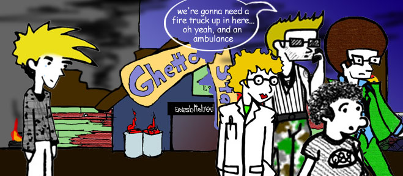

Now that Tor was out of the picture, Floyd was safe to do whatever he wanted. He and his buddies just spent their time lounging around Ghetto Stan's. Also, Floyd started work on a robot of his very own in case that Tor ever came back to attack him again and Ghetto Stan wasn't there to protect him Kirby Puckett style... Little did Floyd know the trouble that he was getting himself into...
If only Floyd realized the connection between the devil, Bill Gates and the Windows 98 operating system installed onto Floyd's robot, Robo-Floyd, how many lives would not have been put at stake...
Not even Ghetto Stan has a ghetto-rig for everything, especially death... Unfortunately, on the eve of its first run, Robo-Floyd went whacko, became a psycho-killer-homicidal-robo-killing machine, and put an end to both Ghetto Stan and Ghetto Stan's house of everything...
Now, Floyd and his friends are left all alone to battle Satan and his minions all alone...

With a mad robot on the loose, Floyd and his ragtag group of friends must fight to save the world... Hopefully they will reign victorious!
In the meantime, beware Robo-Floyd!!!
to be continued...